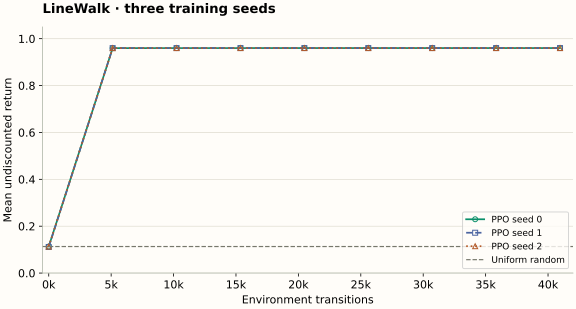

Build and Test PPO: A Small Agent You Can Actually Inspect
Run a complete PyTorch PPO agent, reproduce three seeded experiments, and test the mathematics before trusting a learning curve.
- 01 · Solve the task on paperEnvironmentPositions 0 through 5Optimal actionsRight, right, right, right, rightReturn ceiling0.96 undiscounted
The task is small enough that a surprising result can be investigated directly. A reported average above 0.96 would signal a measurement bug.
- 02 · Check the seamsLossFour clipping gradient casesTargetsGAE and timeout masksBehavior policyInitial ratios equal one
These checks isolate mathematical errors that a noisy reward curve can conceal.
- 03 · Run actual experimentsTraining seeds0, 1, 2Budget per seed40,960 transitionsEvaluation512 sampled episodes per checkpoint
The linked data were produced by the accompanying code. The experiment is a teaching example, not a claim about difficult control benchmarks.
Step through at your own pace. Every stage is available when printing or reading without JavaScript.
Download a complete, deliberately small implementation
The single-file PyTorch lab contains the environment, actor-critic network, GAE calculation, clipped loss, optimizer loop, evaluation, and mathematical checks. It uses Python 3.10 or newer, NumPy, and PyTorch. There is no simulator dependency. Read it beside the complete-update chapter; each stored field has the same meaning.
python -m venv .venv
# macOS / Linux; on Windows use .venv\Scripts\activate
source .venv/bin/activate
python -m pip install numpy torch
python ppo_linewalk.py --check
python ppo_linewalk.py --seeds 0 1 2 --updates 80 --output results.jsonRun these commands from the directory where you downloaded the script. The checked-in results JSON records exact package versions, configuration, and seeds. Dependency versions or hardware changes can alter floating-point results; the equations and task-level checks are the more useful portability targets. The recorded run used Python 3.12.14, PyTorch 2.14.0, NumPy 2.5.3, CPU execution, and one PyTorch thread.
Understand what the environment measures
LineWalk starts at position 0 in a corridor ending at position 5. Actions are 0 for left and 1 for right; left at 0 is clamped to 0. Reaching 5 gives +1 and terminates. Every other step costs 0.01. The observation is a one-hot vector of six positions. It is fully observed; there is no hidden velocity or random transition.
The collector resets an unfinished episode after 12 actions. This is an external cutoff of a reaching-goal task, so the last nonterminal transition bootstraps from its actual successor. Evaluation reports success and total undiscounted reward within the same 12-step window. That bounded observation metric is distinct from the discounted continuing-until-goal objective used for value estimation. Keeping the distinction visible is part of the exercise.
An always-right policy earns 0.96 undiscounted reward. With $\gamma=0.99$, its start-state discounted return is $0.99^4-0.01\sum_{k=0}^{3}0.99^k=0.92119202$. The trained critic need not equal either number exactly: it approximates a stochastic policy’s bootstrapped discounted value, and training has finite data.
Five places to read closely
LineWalk.stepcaptures the successor before resetting. At a timeout, the value target must see the last corridor position, not the new start state.gaeuses separate bootstrap and carry masks. It returns raw advantages and detached value targets together.traincollects underno_grad. Old log probabilities and old values have no optimizer graph. The initial current/old ratio is one before the first update.- The inner loop re-scores stored actions. It does not sample new training actions for an old reward. The rollout is replaced only after the inner loop ends.
evaluatehas its own NumPy random generator. Running an evaluation does not consume the training sampler’s random stream.
The network has a 32-unit tanh shared trunk with separate categorical actor and scalar critic heads. We use 32 environments, 16 rollout steps, four possible epochs, minibatches of 128, learning rate 0.003, $\gamma=0.99$, $\lambda=0.95$, and $\epsilon=0.2$. The shared trunk makes it possible for critic gradients to affect the policy, one reason to monitor policy movement across the entire combined update.
Recorded results, with a visible baseline

Each point evaluates 512 episodes with evaluation seed 12345. Lines connect checkpoints; they do not reveal the unmeasured path between them. All seed traces are shown and largely overlap.
| Policy / training seed | Success within 12 actions | Mean undiscounted return |
|---|---|---|
| Uniform random policy | 22.27% | 0.1133 |
| PPO · seed 0 · 40,960 transitions | 100% | 0.9600 |
| PPO · seed 1 · 40,960 transitions | 100% | 0.9600 |
| PPO · seed 2 · 40,960 transitions | 100% | 0.9600 |
These measurements show that this implementation can learn an easy task under this configuration. They do not establish a general sample-efficiency result or prove every PPO component is necessary. A bandit-style shortcut, another policy-gradient method, or even a hand-coded policy can solve this corridor. The point is that the full PPO bookkeeping is inspectable and the reported outcome can be reproduced.
The first post-initialization evaluation is at update 10, or 5,120 transitions. Do not infer the exact learning time from a line drawn between update 0 and update 10. The three training seeds all achieve 100% sampled success at that checkpoint, but this finite evaluation is not a proof of zero failure probability under the stochastic policy.
What the mathematical checks actually establish
The --check mode checks both objective values and autograd slopes for the four clipping regions. It compares backward GAE with an explicit residual expansion and verifies the three-step values from chapter 3. It distinguishes terminal and timeout bootstrapping, interrupts a trace at a reset inside a rollout, and checks that the stored final observation differs from the reset observation when it should.
It also checks baseline invariance in the two-action bandit, target detachment, and the initial likelihood ratio. These tests catch failures at the interfaces between equations and code. They do not certify that arbitrary hyperparameters will learn, that this implementation reproduces a particular published benchmark, or that a new environment’s wrappers preserve the assumed task.
Three extensions with a prediction first
- Remove timeout bootstrapping. Predict which states become undervalued when successful trajectories are interrupted. Log final positions at timeouts to connect the bias to experience.
- Increase optimizer epochs. Keep environment transitions fixed and compare KL, stopping frequency, and evaluation return. More loss evaluations are not more data.
- Set λ to zero. Inspect how early critic errors change actor weights. Compare across seeds rather than declaring a winner from one curve.
Change one thing at a time and save a new results file with its configuration. The diagnostics chapter gives a method for separating a broken implementation from a weak setting.
Check your understanding: If a run reports an average undiscounted return of 1.10 in this task, what should you do first?
Inspect reward accumulation, episode masks, and evaluation reset handling. The task’s maximum return is 0.96. A higher score cannot be evidence of a better policy under the stated reward definition.